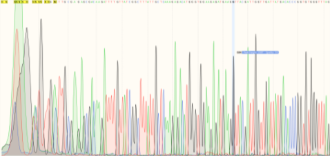

The minimum number of fragments we could break our construct in the order were three from IDT. The fragments contain 80 bp overhangs to the linearized plasmid and were 959 bp, 320 bp, and 445 bp, respectively.
After nanodropping and purifying our fragments, we combined the fragments and Gibson assembly NEB master mix which contains DNA ligase, polymerase, and T5 Exonuclease. We then incubated and did E.coli transformation onto our agar plates.
Our Gibson Assembly did not work because the only colonies visible were the colonies on the ampicillin (-) plate with no growth on the ampicillin (+) plate. This means our plasmid did not assemble correctly or was not transformed.
This means our plasmid did not assemble correctly or was not transformed, and this was proved by the gel electrophoresis that we did with the gibson assembly products, which did not show promising bands.
As there may have been a few minor errors due to inexperience with the first iteration of Gibson, we decided to repeat our protocols with a stricter adherence to incubation times and keeping the cells on ice.
This time, we made sure to be gentle with the cells when pipetting up and down to homogenize them after taking them out of the -80C. We also made sure to keep them surrounded by ice at all times.
The Amp(+) grew colonies after 24 hours. The day after, a few more colonies grew. After growing five colonies from the plate in an overnight culture and performing a miniprep, it was shown that the plasmid was not present in a gel next to our linearized backbone.
We were not sure if the colonies grew because of a successful transformation, or a recircularized plasmid without our construct, or if the bacteria had developed some sort of resistance to the ampicillin. Ampicillin is also known to be heat sensitive, and the plates were made around three weeks ago.
We decided to transfer our successful colonies on the plate stored in 4C onto a carbenicillin plate that is less prone to denaturation along with proper positive and negative controls - the growth of the pRS plasmid and no plasmid, respectively.
One colony from just the pRS plasmid transformation and one colony from the Gibson transformation were streaked onto the new plate.
The pRS colonies and full-plasmid colonies grew successfully on the plate. We conducted a miniprep of both colonies. From the pRS plasmid, we linearized the fragment and ran a DpnI digest to have more copies for yeast assembly. We also ran a gel to ensure that the miniprep had worked successfully for the Gibson plasmid. However, upon sequencing, it was discovered that the base pairs were misformed.
Although it seemed like the assembly was successful because it grew on the plate, the sequencing results were incorrect, indicating there are other processes that may give the bacteria antibiotic resistance such as the re-circularization of the backbone without proper insert of fragments, or some colonies “sneaking” past regions of media with less antibiotic.
XXX
XXX
The pRS colonies and full-plasmid colonies grew successfully on the plate. We conducted a miniprep of both colonies. From the pRS plasmid, we linearized the fragment and ran a DpnI digest to have more copies for yeast assembly. We also ran a gel to ensure that the miniprep had worked successfully for the Gibson plasmid.
XXX
As Gibson Assembly works optimally with a smaller number of plasmids
For a smaller number of DNA,
The pRS colonies and full-plasmid colonies grew successfully on the plate. We conducted a miniprep of both colonies. From the pRS plasmid, we linearized the fragment and ran a DpnI digest to have more copies for yeast assembly. We also ran a gel to ensure that the miniprep had worked successfully for the Gibson plasmid.
This gel showed no bands at all, despite having semi successful sequencing results.
The sequencing results show that part of the sequence is there, but the sequence is all part of the backbone not of the actual insert. The expected results are 680 bp on GIB AND 2, NOT on pRS or - control.